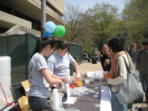
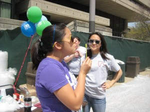
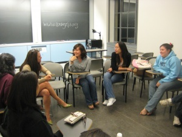

Events Held by Active Minds at MIT
Spring 2013 Events:
- Speak Your Mind Campaign
- QPR Sessions
- National Stressed Out Day
- Perks of Being a Wallflower Screening and Discussion
- Wellness Week
- BubbleFest
- Speak Your Mind Reception
Fall 2012 Events:
- Lars and the Real Girl Movie Screening and Discussion
- General Body Meeting
- QPR Sessions
- Counselors Out of the Center
- Speak Your Mind, made possible by the Dare to Dream America program.
Spring 2012 Events:
- America the Beautiful 2 Movie Screening and Discussion
- General Body Meeting
- QPR Sessions
- PostSecret
- Speak Your Mind, made possible by the Dare to Dream America program.
Fall 2011 Events:
- Meet the Clinicians!
- First GBM!
- It's Kind of a Funny Story Screening!
- Out of the Darkness Community Walk!
- Speak Your Mind MIT, made possible by the Dare to Dream America program.
Spring 2011 Events:
- Question – Persuade – Refer (QPR) Training Session
- Feel, Felt, Found
- Meet the Clinicians!
- Will You Be Our Valentines?
- Wellness Week Kick-off Luncheon!
- BUBBLE FEST! during Wellness Week
- LSC viewing of A Beautiful Mind during Wellness Week, with a speaker from MIT Mental Health and free dinner from BGood!
Our past events have included:
- Freshman Orientation 2008: Recent Alumni Panel
- Freshman Orientation 2009: Tech Theater
- CPW and Orientation Activities Midways
- Associate Advisor Training (Fall 2008)
- QPR Training
- Active Minds Ambassadors program
- Wellness Week (annual program with UA CSL): Bubble Fest (2008, 2009) + Colleen Coffey (2009) + Creating Conversation with Chad Waxman (2009)
- Annual national conference
- Resource cards
Past Event Posters:
{kind=link}
{kind=link}
{kind=link}
{kind=link}
{kind=link}
Posters designed by Douglas Sanchez
Past Event Pictures:

Liz and Janice hand out bubble tea at Bubble Fest!
{kind=link}

Student stop by Bubble Fest to blow bubbles!
{kind=link}

Colleen Coffey speaks on the stigma surrounding mental health.
{kind=link}